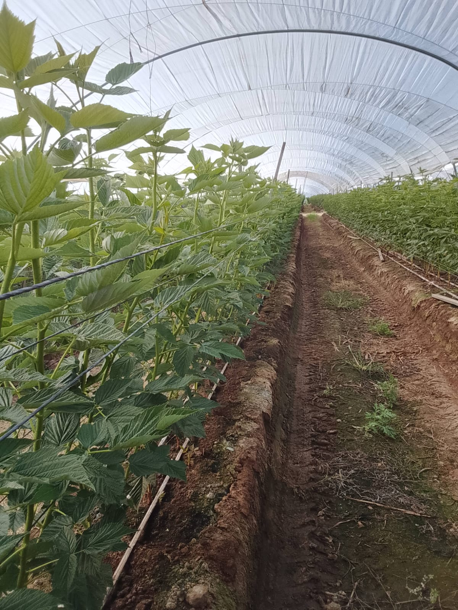
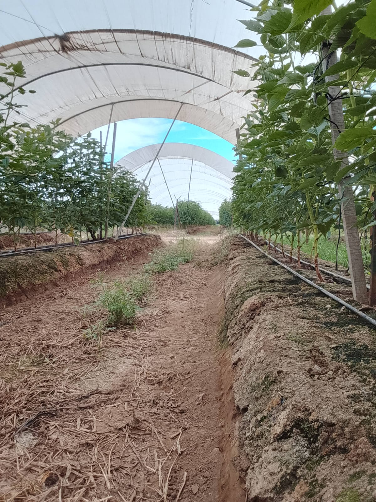

BOLSA DE TRABAJO
Crece con nosotros en el campo. Forma parte de nuestro equipo de trabajo y participa en la producción de frambuesa.
Solicitar empleoMurillo Méx es un invernadero dedicado a la producción agrícola de frambuesa. Nuestro trabajo requiere responsabilidad, dedicación y compromiso con el campo. Buscamos personas interesadas en formar parte de nuestro equipo de trabajo.
Nos dedicamos al cultivo y producción de frambuesa en invernadero.
Buscamos personas responsables y comprometidas con sus actividades.
Trabajamos con el cuidado y desarrollo de plantas de frambuesa.
Conoce nuestras instalaciones y los cultivos de frambuesa de Murillo Méx.


Conoce algunas de las áreas en las que puedes solicitar una oportunidad laboral.
Actividades relacionadas con el cuidado y desarrollo de los cultivos.
Selección, clasificación y preparación de los productos.
Apoyo en las diferentes actividades agrícolas del invernadero.
Organización y seguimiento de las actividades de trabajo.
✔ Ser mayor de 18 años.
✔ Contar con documentación requerida.
✔ Tener responsabilidad y puntualidad.
✔ Disponibilidad de horario.
✔ Tener disposición para trabajar en equipo.
✔ Interés en las actividades agrícolas.
Los requisitos definitivos serán confirmados por el encargado de contratación.
Un ambiente de colaboración y respeto.
Actividades y horarios establecidos.
Oportunidad de aprender actividades agrícolas.
Completa tus datos para solicitar una oportunidad de trabajo en Murillo Méx.
Genera un código QR para que las personas puedan ingresar directamente a la página de contratación de Murillo Méx.
Tu código QR aparecerá aquí.
Invernadero de Frambuesa
Comunícate con el encargado de contratación para obtener información sobre las vacantes.
Agrega aquí el teléfono y domicilio oficiales del invernadero.